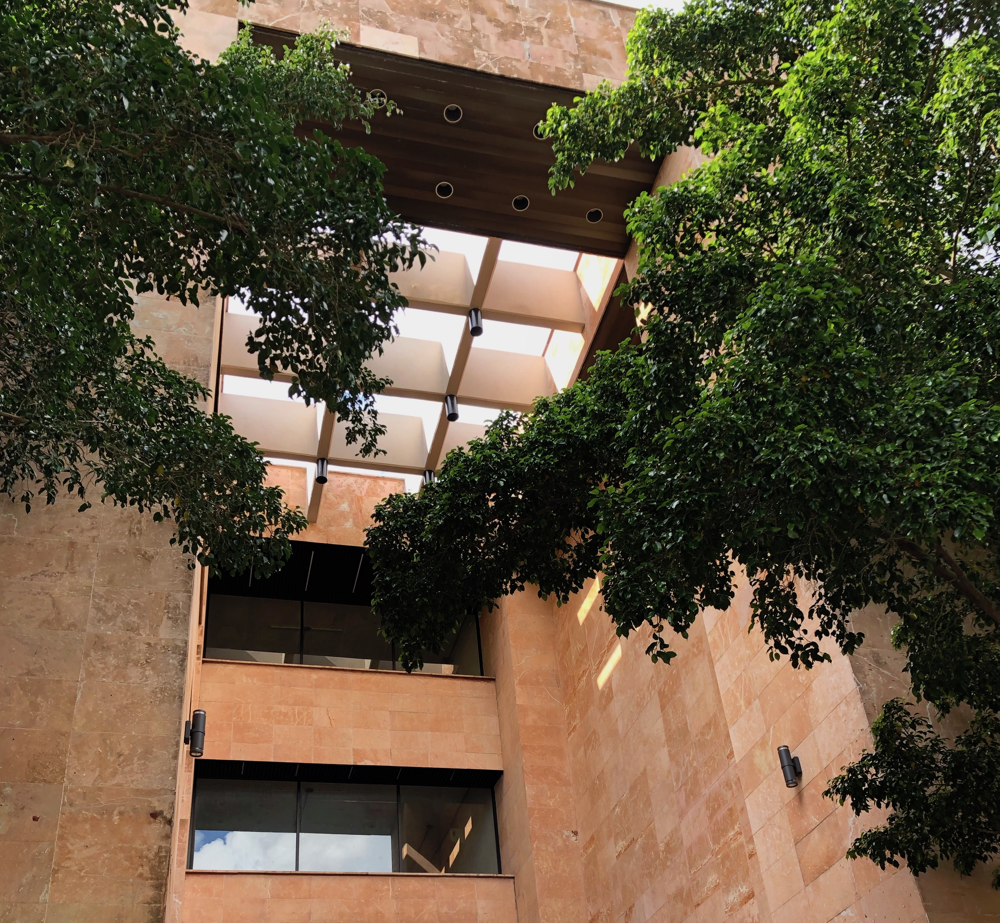
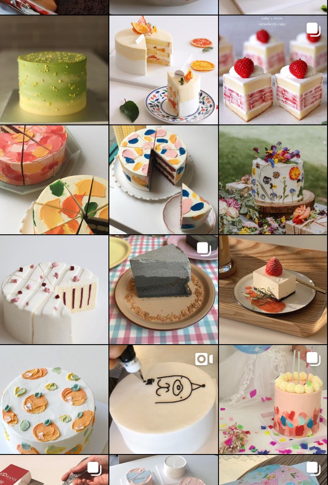

Hey again! I'm Peijia and I'm a senior finishing up my last year of Cognitive Psychology at the University of British Columbia in Vancouver, Canada.
As a designer, I'm passionate about designing engaging experiences that allows people to connect and access tools that could help improve their lives. Whether that's researching more about the problem scope, understanding people or refining a current product, I see creativity as a way to solve problems and explore ideas.
In my personal endevours, I'm usually taking lots of (shaky) videos, chasing down wildlife , and spending too much time in supermarkets. A goal of mine is to create a documentary or a photojournalism series (nat geo pls) one day.
, and spending too much time in supermarkets. A goal of mine is to create a documentary or a photojournalism series (nat geo pls) one day.
Currently, I'm designing at Quorum (Y Combinator S2019) and LimeSpot.
- Insert shaky video here -
🌸 Previously, I was a senior floral designer at Celsia
🏔I've lived at a monastary in Bhutan
🏰 Love history, geography and archeology
🍰 I have an obsession with cake (see cake collection)
This site is made from scratch.